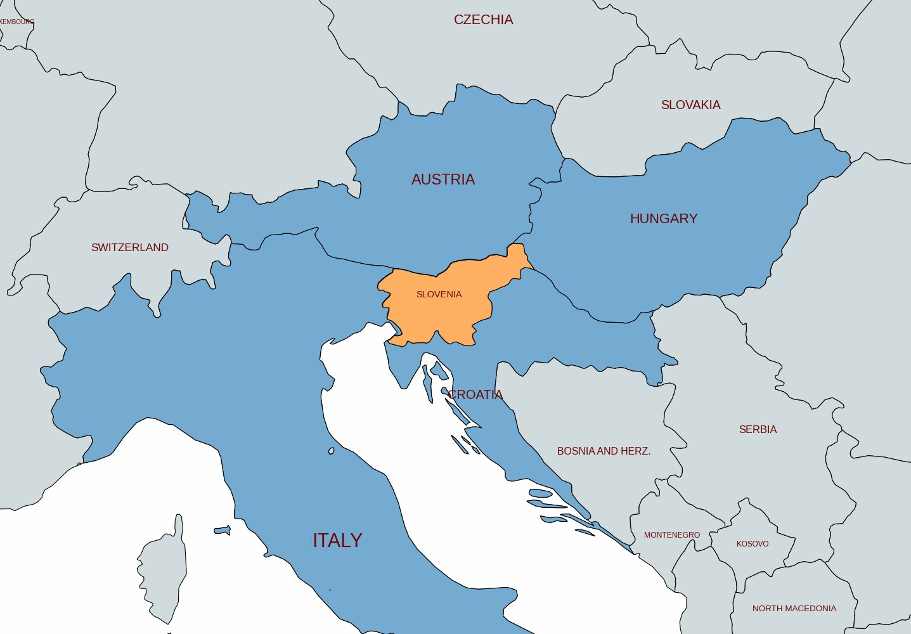
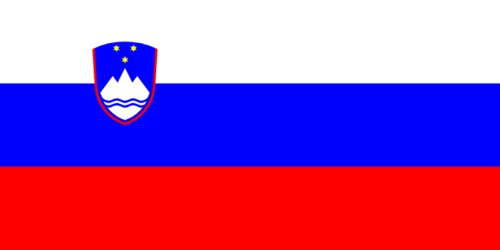
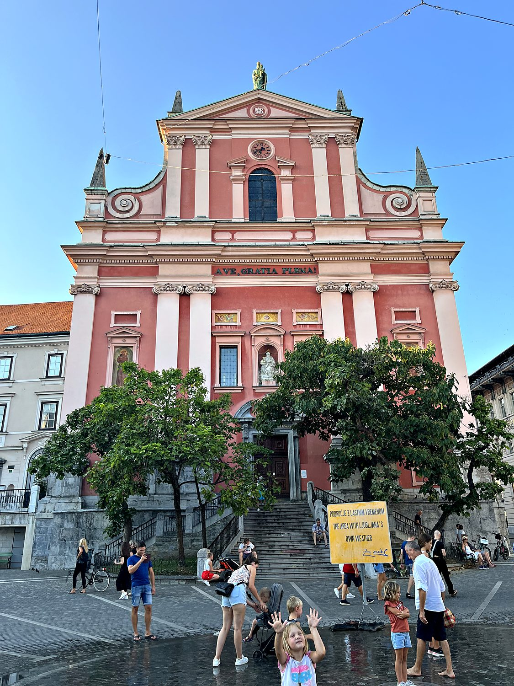
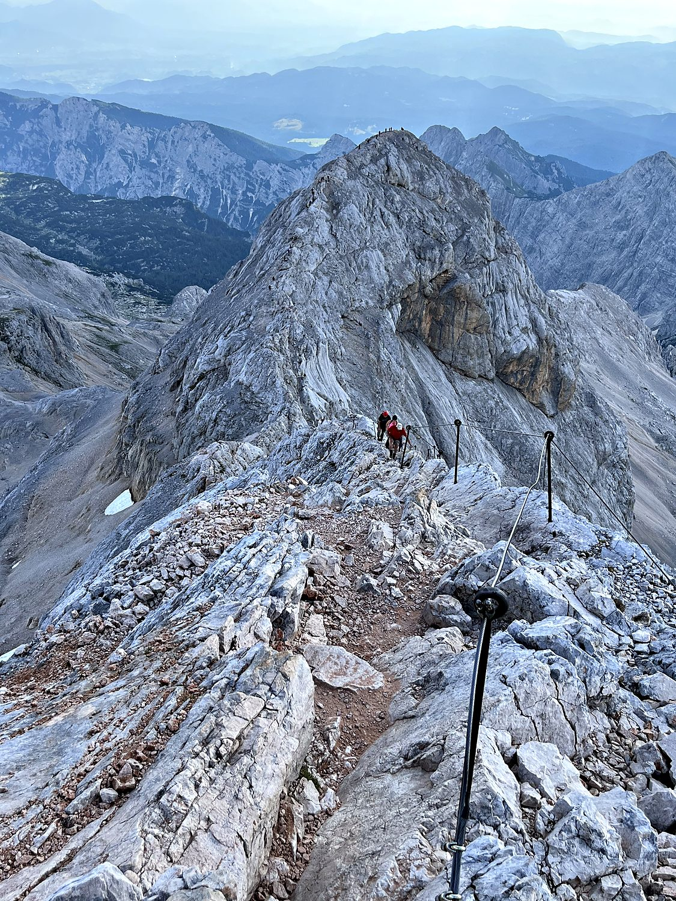
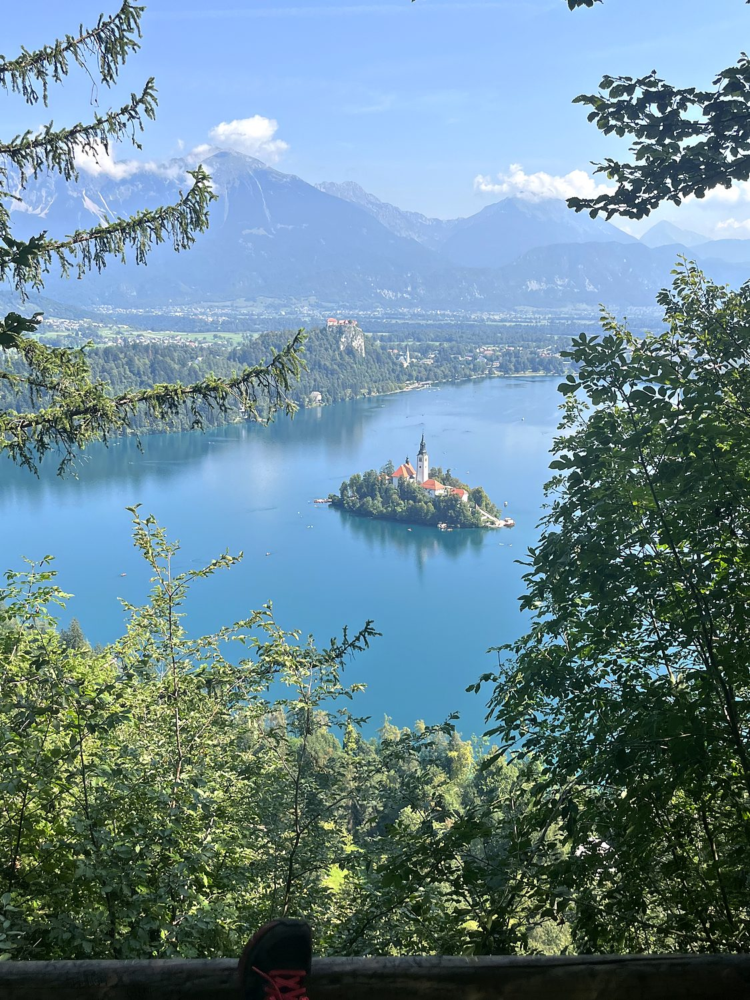

I spent about a week in Slovenia in August 2023, and it may be the most underrated country in Europe. It is a compact, impossibly green land where you can wander a charming capital one day, stand atop an alpine summit the next, and finish beside a fairy-tale lake, all within a couple hours' drive. I arrived courtesy of an extraordinarily generous Slovenian couple who not only drove me across the border for free but insisted on buying me ice cream and demonstrating, en route, how their homemade plum rakija is distilled. That set the tone for the whole visit: a small nation of about two million people, punching absurdly above its weight in natural beauty and quiet hospitality, where even the roadside strangers seem determined to make you love the place.
My base was Ljubljana, the diminutive and thoroughly delightful capital, whose name locals will happily tell you contains the word for “beloved.” It is a city built to human scale: a pastel old town wrapped around the emerald Ljubljanica River, presided over by a hilltop castle and guarded, according to legend, by a dragon that adorns the city's coat of arms and its famous bridge. Much of the city's dreamy character comes from the architect Jože Plečnik, who reshaped Ljubljana in the early 20th century with elegant bridges, colonnades, and squares. From there the country opens up fast: north and west rise the Julian Alps, crowned by Mount Triglav, and tucked among them sit the glacial jewels of Lake Bled and Lake Bohinj. I strolled Ljubljana's statue-dotted streets, climbed Triglav, and walked the shores of Bled. Each leg felt like a different country compressed into one small, spectacular package.

The Slovenes are a South Slavic people who settled these alpine valleys in the 6th century. For most of the thousand years that followed they lived under the rule of others, chiefly the Habsburgs, whose Austrian empire governed the Slovene lands from the Middle Ages until 1918. Remarkably, through all those centuries of foreign rule, the Slovenes held onto their distinct language and identity. This finally found political expression in the 19th-century national awakening led by poets like France Prešeren, whose statue anchors Ljubljana's central square. After World War I dissolved the Austro-Hungarian Empire, Slovenia joined the new state that would become Yugoslavia, binding its fate for the next seven decades to that of its fellow South Slavs.

When Yugoslavia began to fracture in 1991, Slovenia was the first republic to break away, declaring independence and then defending it in the Ten-Day War. This was a brief, comparatively bloodless conflict that spared Slovenia the horrific fighting that would soon engulf the rest of the former Yugoslavia. Having secured its freedom, the young country turned decisively westward, joining both the European Union and NATO in 2004, and adopting the euro a few years later. Today Slovenia is a stable, prosperous, and strikingly well-kept nation that is proud of its Slavic heritage. Its national identity is so bound up with the mountains that its highest peak sits at the center of its flag.
The heart of Ljubljana is Prešeren Square, a lively cobbled plaza dominated by the salmon-pink facade of the 17th-century Franciscan Church of the Annunciation, pictured here. It is named for France Prešeren, the Romantic poet whose verses became Slovenia's national anthem. From the square, the Plečnik-designed Triple Bridge fans out across the river toward the old town, where narrow streets climb toward the medieval Ljubljana Castle on its wooded hill. The city is dotted with whimsical sculptures and, in a detail I loved, an artificial fountain that produces its own little circle of falling rain. For a European capital, Ljubljana is almost improbably relaxed and green. It feels less like a seat of government than an oversized, exceptionally pretty university town.

Rising 2,864 meters in the Julian Alps, Mount Triglav is the highest peak in Slovenia and the country's defining national symbol. There is an old saying that you are not truly Slovenian until you have stood on its summit, and climbing it remains a rite of passage. I made the ascent over a long day, setting out in the dark at four in the morning and tackling the exposed final ridge with the help of the fixed cables and iron rungs of its famous via ferrata. It was thrilling but reassuringly secure. At the top, a Dutch climber and I honored the local tradition of being ceremonially whacked on the backside with a knotted rope, a slightly undignified but time-honored initiation into the fraternity of those who have summited Triglav.

No image captures Slovenia quite like Lake Bled: a glacial lake of astonishing blue-green water, cradled by the Alps, with a tiny island at its center crowned by the steepled Church of the Assumption. It is the only natural island in the country, and reaching it is part of the ritual. Visitors are rowed across in traditional flat-bottomed boats, climb the 99 stone steps to the church, and ring its bell to make a wish. Watching over the whole scene from a sheer cliff is Bled Castle, the oldest castle in Slovenia. I walked the full loop around the lake to the Osojnica viewpoint, pictured near here, and can confirm that the view down onto the island fully earns its reputation as one of the most picturesque vistas in Europe.
